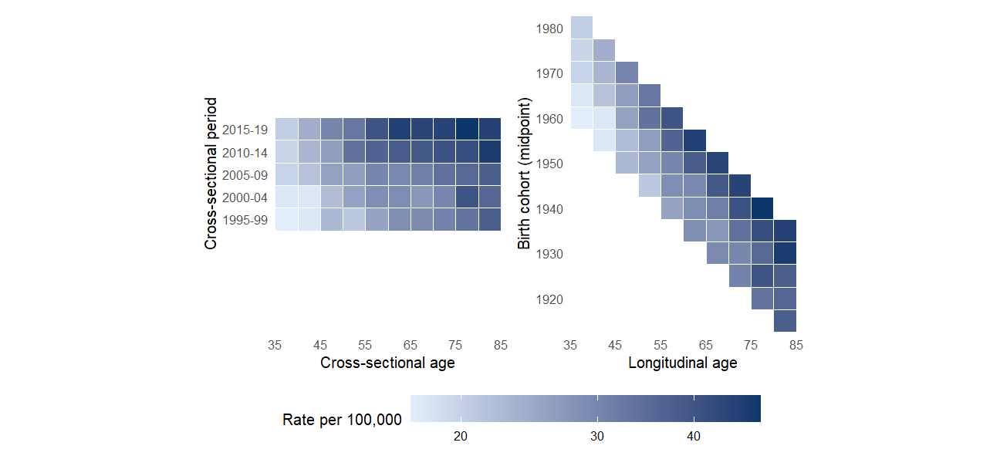

R <- matisse_example(1)
R55 <- rates_chunk(R, age_block = 5, per_block = 5)
lexis_plot(R55)
MODULE 1 OF 6 · ABOUT 1.5 HOURS · BEGINNER
rates object from the example data, a CSV file, or your own table;
rates_chunk()), fill zero cells (rates_fill()) and interpolate ages (rates_i5());
lexis_plot().
A Lexis diagram is a grid with calendar period on one axis and age on the other. Each cell holds two numbers for a surveilled population: the events (for example, new cases of a disease, or deaths) and the person-years at risk. Their ratio is the rate, usually quoted per 100,000 person-years.
Because everyone ages one year per calendar year, a person moves diagonally through the grid. All people in the same diagonal were born in the same years, so the diagonals are birth cohorts. For a cell with midpoints a (age) and p (period):
\[\text{cohort} = p - a\]
A person aged 50 in 2000 belongs to the 1950 cohort. Every cell therefore carries all three time scales at once, and that is why APC analysis needs a model: age, period and cohort cannot be separated by reading the table.
lexis_plot() shows the same rates twice: over age and period (left), and over age and birth cohort (right). Here it is for the first example dataset, with cells combined to 5 years of age by 5 years of period:
R <- matisse_example(1)
R55 <- rates_chunk(R, age_block = 5, per_block = 5)
lexis_plot(R55)
Rates rise steeply with age, which dominates the picture. To see period and cohort effects you need a model that holds age fixed. That is the subject of Module 2.
The Europe study models 5-year age groups from 20 to 84 in 5-year periods (for example, 1973 to 2017 for England). It is a Lexis diagram of exactly this kind.
In matisseR, a Lexis diagram is a rates object: a list whose two main parts are matrices with one row per age group and one column per period, Events and Offset (person-years).
names(R)[1] "Events" "Offset" "ages" "periods" "fullname" "event_label"
[7] "description"dim(R$Events) # 50 single years of age x 29 calendar years[1] 50 29R$Events[1:3, 1:4] # the first cells: ages 35-37, years 1991-1994 1991 1992 1993 1994
35 9 3 6 5
36 3 4 4 8
37 8 4 7 12rates_uni() gives a one-line summary, and rates_long() turns the matrices into a table with one row per cell, including the age, period and cohort midpoints:
rates_uni(R)[, .(ages, periods, cell, events, person_years, crude_rate)]| ages | periods | cell | events | person_years | crude_rate |
|---|---|---|---|---|---|
| 35-84 | 1991-2019 | 1x1 | 16339 | 56075673 | 29.1 |
head(rates_long(R), 3)| age_lo | age_mid | per_lo | per_mid | events | offset | coh_mid | rate |
|---|---|---|---|---|---|---|---|
| 35 | 35.5 | 1991 | 1991.5 | 9 | 44987 | 1956 | 20.0058 |
| 35 | 35.5 | 1992 | 1992.5 | 3 | 46237 | 1957 | 6.4883 |
| 35 | 35.5 | 1993 | 1993.5 | 6 | 47417 | 1958 | 12.6537 |
The cell column reads age width x period width: 1x1 means single years of age and single calendar years.
Open example 5 (breast cancer) and example 6 (lung cancer) with matisse_example(5) and matisse_example(6). Compare their crude_rate in rates_uni(). Then draw lexis_plot(rates_chunk(matisse_example(6), 5, 5)). Where do you see the highest rates?
The APC model needs square cells (age and period intervals of equal width) and no zero counts, because it works on log rates. Three functions prepare a rates object.
rates_chunk()rates_chunk() sums blocks of ages and periods. If the periods do not divide evenly, the leftover periods are dropped from the start, so the most recent data are kept:
R55 <- rates_chunk(R, age_block = 5, per_block = 5)
rates_uni(R55)[, .(ages, periods, cell, events)]| ages | periods | cell | events |
|---|---|---|---|
| 35-84 | 1995-2019 | 5x5 | 14716 |
The 29 single years from 1991 to 2019 became five 5-year periods, 1995-1999 to 2015-2019. The first four years (1991 to 1994) did not fill a block and were dropped. The total number of events fell accordingly.
rates_fill()Small populations produce empty cells. Example 3 is a small population with many zeros:
Z <- matisse_example(3)
c(zero_cells_before = sum(Z$Events == 0),
zero_cells_after = sum(rates_fill(Z)$Events == 0),
fill_value = rates_fill(Z)$fill_value)zero_cells_before zero_cells_after fill_value
178.0 0.0 0.5 rates_fill() replaces zero or missing counts with a small positive value (at least 0.5) so that log rates exist. If you have many zeros, combining cells with rates_chunk() first is usually better than filling.
rates_i5()Registries often publish 5-year age groups. rates_i5() interpolates to single years of age; "linear" keeps the group totals, "cubic" gives smoother values:
A5 <- rates_chunk(R, age_block = 5) # 5-year ages, single years of period
I1 <- rates_i5(A5, "linear")
c(age_groups_before = nrow(A5$Events), single_years_after = nrow(I1$Events),
total_events_equal = sum(I1$Events) == sum(A5$Events)) age_groups_before single_years_after total_events_equal
10 50 1  1:15Use your own data in matisseRFrom a web tool file or your own table to a rates object ↗
1:15Use your own data in matisseRFrom a web tool file or your own table to a rates object ↗
There are two common ways to get your data into a rates object.
From an NCI Age Period Cohort Web Tool file. If you already prepared an input matrix for the NCI web tool (for example from SEER*Stat or the CI5 Plus database), read it directly with csv2rates(). The package’s example files use this format:
file <- system.file("extdata", "syn01_melanoma_F_A.csv", package = "matisseR")
R_csv <- csv2rates(file)
rates_uni(R_csv)[, .(object, ages, periods, cell, events)]| object | ages | periods | cell | events |
|---|---|---|---|---|
| Synthetic melanoma F A | 35-84 | 1991-2019 | 1x1 | 16339 |
Going the other way, rates2csv(R, "my_rates.csv") writes a rates object in the same format, so you can also run it in the web tool.
From a table of cases and person-years. rates_make() takes a table with one row per age group and year: age (the 5-year group index, 1 = 0-4, 2 = 5-9, …, 18 = 85+), year, cases and py. To practise, rebuild such a table from the example:
tab <- rates_long(R)[, .(age = floor(age_lo / 5) + 1, year = floor(per_lo), events, offset)
][, .(cases = sum(events), py = sum(offset)), by = .(age, year)]
head(tab[order(age, year)], 3)| age | year | cases | py |
|---|---|---|---|
| 8 | 1991 | 37 | 214518 |
| 8 | 1992 | 23 | 220461 |
| 8 | 1993 | 31 | 226555 |
R_make <- rates_make(tab, age_groups = 8:17, fullname = "Rebuilt from a table") # ages 35-39 to 80-84
rates_uni(R_make)[, .(ages, periods, cell)]| ages | periods | cell |
|---|---|---|
| 35-84 | 1991-2019 | 5x1 |
The cells are 5x1: 5-year age groups but single calendar years. Combine periods to make them square:
rates_uni(rates_chunk(R_make, per_block = 5))[, .(ages, periods, cell)]| ages | periods | cell |
|---|---|---|
| 35-84 | 1995-2019 | 5x5 |
Equal age and period widths, enough cases per cell (combine cells if many are empty), and consistent person-years across all cells. The Resources page links the slides on extracting SEER and CI5 Plus data.
A woman is aged 50 at the midpoint of the period 2000. Which birth cohort is she in?
Cohort = period - age = 2000 - 50 = 1950. The diagonals of a Lexis diagram are birth cohorts.
Why must zero counts be filled before you fit the APC model?
The New APC model is fitted to log rates (by weighted least squares by default), so every cell needs a positive count. rates_fill() supplies a small positive value; combining cells with rates_chunk() first reduces the number of zeros.
You run rates_chunk(R, age_block = 5, per_block = 5) on 29 single calendar years (1991 to 2019). What remains?
29 = 5 x 5 + 4. Leftover years are dropped from the start, so the most recent periods are kept: 1995-1999 up to 2015-2019.
Finished this module? Mark it complete to track your progress.